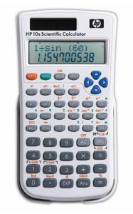

WebCal 計數機網頁
HP-10S 簡介

編寫日期: 2007年9月17日
HP-10S為2007年新推出的科學型號計算機，雙行顯示屏，上行顯示輸入的算式，下行顯示計算結果，操作方法採用S.V.P.A.M.系統，它與舊款的HP-8S或者CASIO fx-82MS、fx-83MS 、fx-85MS、fx-270MS、fx-300MS及fx-350MS的計算功能及操作方法一樣，甚至按鍵的編排亦很接近，基本上是將舊款的HP-8S重新包裝再推出市場，由於這些計算機都有9個英文字母數字記憶，所以不會獲香港考評局接納為中學會考或高考的准用計算機。
HP-10S的計算功能不多(240項計算功能)，除了沒有程式功能外，亦沒有微積分、複數、解方程式、矩陣、向量、單位轉換等等功能，只有一些較基本科學計算功能，較為 特別一點 的是回歸計算包含一些非線性回歸計算，亦有小數轉換分數及角度單位換轉等功能。
WebCal計算機索引